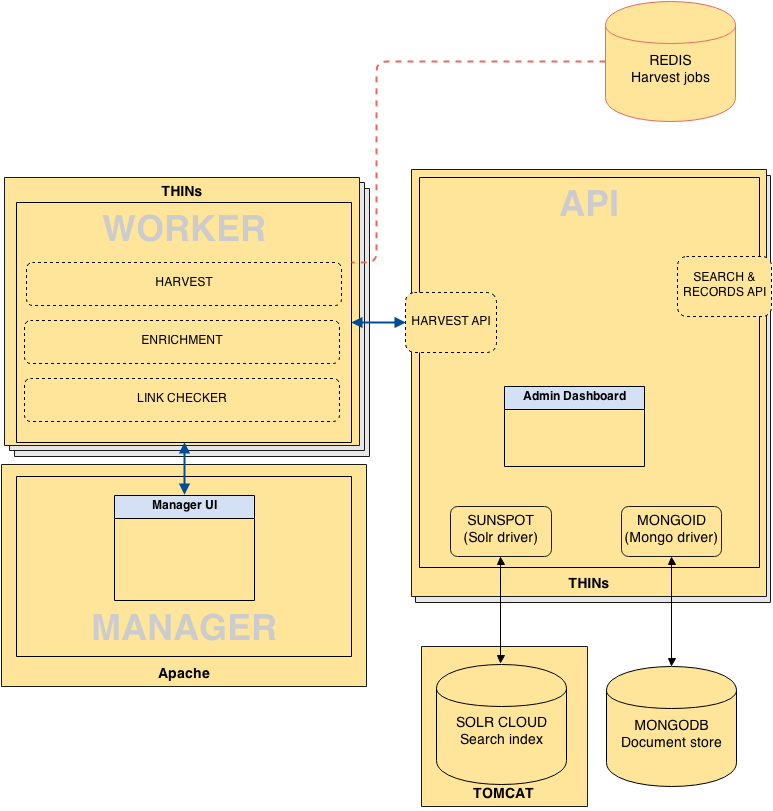

What is Supplejack?
Supplejack is a platform for managing the harvesting and manipulation of metadata. It was originally developed to manage the sourcing of metadata for the DigitalNZ aggregation service, and has grown to a platform that can manage millions of records from hundreds of data sources.
It's main purpose is to manage the process of fetching data from remote sources, mappaing data to a standard data schema, managing any quality control or enrichment processes, and surfacing the standardised data via a public API. The full Supplejack code repo is on GitHub.
Check out the screencast for an introduction to Supplejack:
Key features
- Responsive designed web interface for managing harvesting activity
- Support for all types of data sources, including XML, OAI-PMH, RSS, HTML, MARC, RDF, JSON
- Customisable data schema
- A rich Domain Specific Language for writing the harvest instructions for each data source
- Ability to embed ruby code into parser scripts for complex data harvests or enrichments
- Inbuilt error-checking, and notification routines during the harvesting and enrichment processes
- Code snippets that can be used to insert parser scripting blocks for reuse across different harvests
- Support for manipulation, validation, namespacing, transformation, and enrichment of data
- Scheduling options for regular reharvests and incremental updates and deletions. Can be set to any increment such as every hour, day, month etc. at a specific time
- Throttling and response time control to specifiy rate at which individual harvests run
- Broken link monitoring with automatic search index suppression and restoration routines
- Manual control for the suppression of records or collections from the search index
- API framework for the sharing of stadardised data
- API dashboard for monitoring API key activity and setting query throttle rates
Architecture
Developed in Ruby on Rails, there are three core components of the Supplejack platform:
- Manager (user interface for controlling activity)
- Worker (for harvesting, enrichment, and link checking activity)
- API (public API wrapper to search index and metadata repository)
Supplejack relies on integration with both a search index (default is Solr) and a metadata repository (default is MongoDB).
